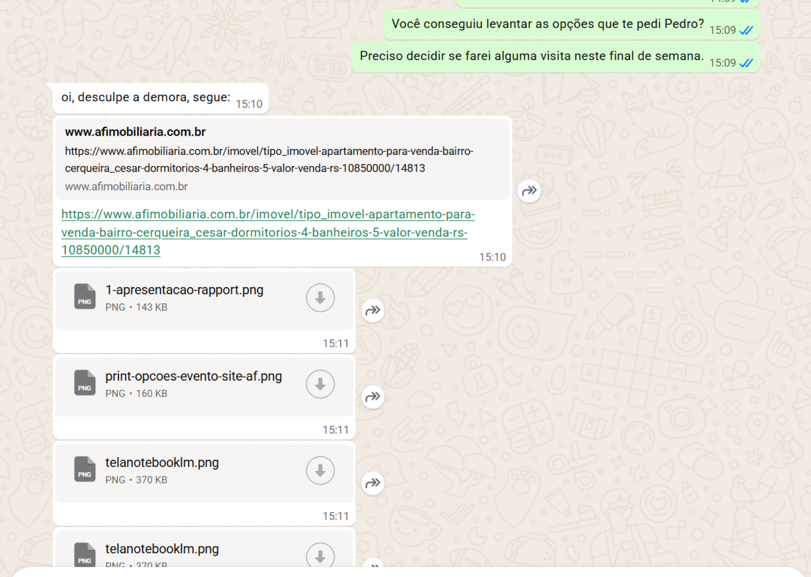

Esta é a versão V0 da fakedoor construída para nosso ICP ideal:
imobiliárias médias e grandes que desejam estruturar governança comercial
no momento mais crítico da conversão.
Abaixo começa a experiência pensada para esse ICP.
Seu feedback impacta diretamente a decisão de avançarmos.
Quando o lead já solicitou informações específicas dentro da sua imobiliária, ele não está mais buscando outras opções. Ele está decidindo se aquele imóvel — e aquele corretor — merecem o tempo dele.
Inteligência aplicada ao momento crítico da decisão.
Quero testar na minha operaçãoO lead já iniciou a experiência com sua imobiliária. Isso é uma vantagem conquistada.
Mas muitas vezes a resposta enviada é apenas um link, sem estrutura estratégica e sem diferenciação.

O corretor informa critérios técnicos, perfil do lead e objetivo da busca.
A IA organiza imóveis por aderência real, com racional estratégico claro.
Verificação contextual entre campos estruturados e descrição do imóvel. Inconsistências são sinalizadas antes do envio.
Alinhamento estratégico da operação.
Preparação do inventário piloto.
Uso estruturado por 15 dias.
Sem troca de CRM. Sem integração complexa. Sem risco operacional.
Valide em sua operação com um piloto controlado.
Quero testar na minha operação
Sua opinião é estratégica para decidir os próximos passos.
Marcos Russi Alcantara
LinkedIn: (inserir)
WhatsApp: (inserir)
Email: (inserir)